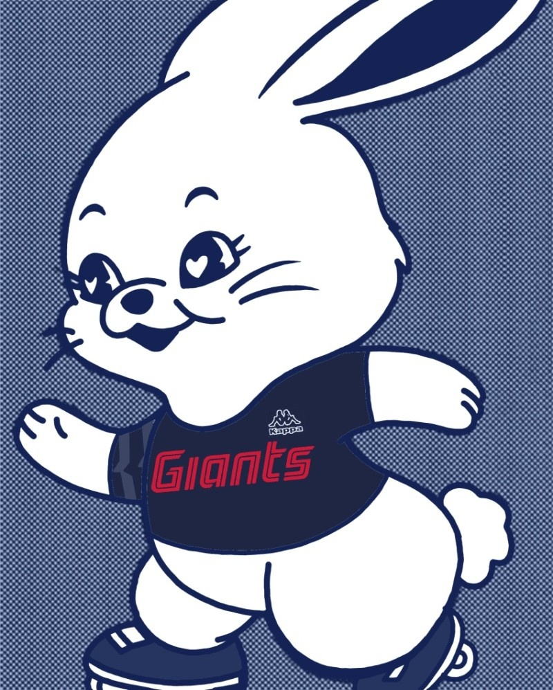

수강생 강리아
1M subscribers
Up next
-
 박세웅이 NC 타선을 잠재운 것이 승리로 이어졌다. 이번 시즌 처음으로 7이닝을 소화하며 삼진 8개를 솎아내는 위력투를 과시했다. 수강생 강리아 82K views
박세웅이 NC 타선을 잠재운 것이 승리로 이어졌다. 이번 시즌 처음으로 7이닝을 소화하며 삼진 8개를 솎아내는 위력투를 과시했다. 수강생 강리아 82K views -
박세웅이 NC 타선을 잠재운 것이 승리로 이어졌다. 이번 시즌 처음으로 7이닝을 소화하며 삼진 8개를 솎아내는 위력투를 과시했다. 수강생 강리아 82K views
-
 박세웅이 NC 타선을 잠재운 것이 승리로 이어졌다. 이번 시즌 처음으로 7이닝을 소화하며 삼진 8개를 솎아내는 위력투를 과시했다. 수강생 강리아 82K views
박세웅이 NC 타선을 잠재운 것이 승리로 이어졌다. 이번 시즌 처음으로 7이닝을 소화하며 삼진 8개를 솎아내는 위력투를 과시했다. 수강생 강리아 82K views